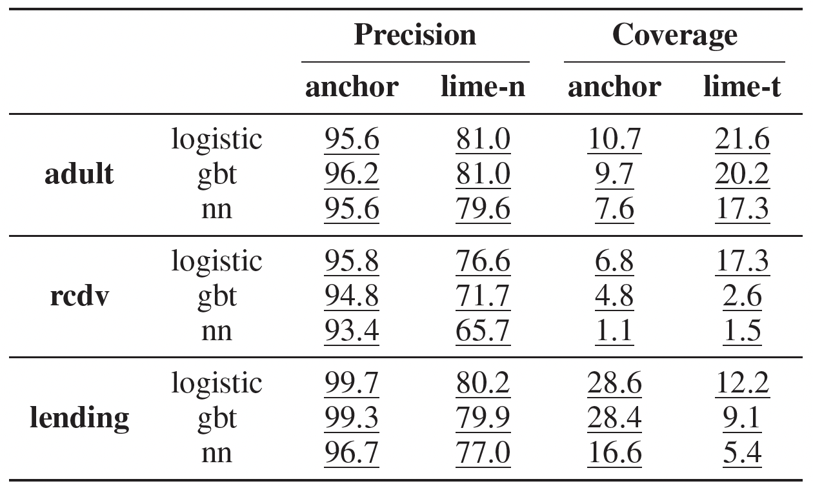
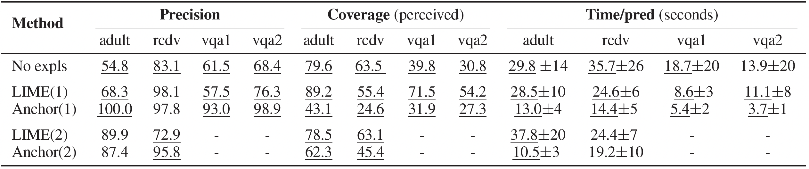

1 From building black box models to explaining black box models
Machine learning has grown from being a niche curiosity in computer science to dominating decision making processes in a variety of contexts. Thereby leading to the need to ensure that the decisions that are automated by computational systems are unbiased, accountable, and transparent. Traditionally, automated decision making was done through statistical models such as linear regression, which were inherently interpretable as models were defined based on distributional assumptions about the data and restricted the model complexity. However, these assumptions did not hold for long as began to be accumulated from many sources with higher variety, resulting in interpretable white box models failing to keep up with the desired performance. Novel machine learning models allow researchers to let the model define the functional form of the decision process. As more of our decision making processes are automated through complex models, the need to answer the question: ”How did the model arrive at this decision?” has started to gain traction over the past few years (Molnar, Casalicchio, and Bischl 2020).
Explainable AI is a research area that develops statistical and algorithmic techniques to approximate and communicate the decision process of black box models. There are many classifications of explainable AI methods, and the two most prominent classifications are centered around the model agnosticism and the scope of explanations. Explainable AI methods that are capable of explaining any black box models are called model agnostic methods where the internal parameters or gradients are not utilized to explain the model. On the other hand, there are model specific methods that utilize the structure of the black box model such as the weights and gradients of neural networks to provide explanations. In terms of the scope of explanations, an explaination can be capable of explaining the entire decision process of the entire training data instances or for a single data instance. The former would be called global explaination methods while the latter will be called local explaination methods. Examples for global explaination methods would include Partial Dependence Plots and Individual Conditional Effects while examples of local explaination methods would include LIME, SHAP and Counterfactuals (Molnar 2022).
This report will discuss and review the paper “Anchors: High precision model agnostic explanations” (Ribeiro, Singh, and Guestrin 2018). The structure of this report will be as follows. Section 2 will define what anchors are and review the main arguments given by the authors of the paper. As a contribution to the existing research work, I will be providing a tutorial on what anchors are, from a simple example to complex methods using different intuitive techniques and dicussing the applicability of each method. Section 3 will implement the fundamental concept of anchors in such incremental steps starting with one dimensional data and moving to higher dimensions. Finally, an overall review of the paper and the discussion on the process of reproducing the paper will be discussed in Section 4.
2 What are Anchors?
2.1 Theoretical definition
Anchors are a model agnostic method of explaining black box models which attempt to present the model’s decision process for a single given instance. In addition to providing the decision process for the given instance, anchors provide humans with the capability to predict a black box model’s behaviour on unknown instances. This is achieved by providing a set of simple decision rules that apply to a large area of the feature space containing predictions similar to the given instance.
The authors have defined anchors as a rule or a set of predicates that satisfy the given instance and is a sufficient condition for \(f(x)\) (i.e. the model output) with high probability.
A predicate is a logical condition that an observation may or may not satisfy. The simplest form of these predicates takes in the form of \(\{x_1 > 2\}\). An instance with the \(x_1\) feature greater than 2 would satisfy this predicate. Therefore a possible candidate for an anchor might take the form of \(\mathcal{A} = \{x_1 > 2, x_1 < 3, x_2 > 10, x_3 < 5,x_4 == 1, \dots\}\). The authors have not defined exactly how a predicate should be structured due to the wide variety of data available in the wild. Since most of our applications are on tabular data, I can assume the simplest form of orthogonal boundaries.
For a list of predicates to be an anchor it should satisfy the given instance while also maximizing two criteria, 1. Precision 2. Coverage
Let’s dive into how each of these criteria is calculated.
2.1.1 Precision
In the paper, precision is defined formally as \[
\text{Prec}(\mathcal{A}) = \mathbb{E}_{\mathcal{D}(z|\mathcal{A})}[\mathbb{1}_{f(x) = f(z)}]
\]
Here \(\mathbb{D}\) is the perturbation distribution based on the given instance \(x\).
2.1.1.1 What is a perturbation distribution?
A perturbation distribution is a method of generating varied versions of the data (kind of like alternate realities of the same data). The simplest form of a perturbation distribution would be to use a multivariate normal distribution centered around the given instance.
The paper argues that it is intractable to calculate the precision directly (the term directly could be meaning analytically as it is numerically possible to approximate the expected value). Therefore a list of predicates \(\mathcal{A}\) is considered an anchor if \[
\text{Pr}(\text{Prec}(\mathcal{A}) \ge \tau) \ge 1 - \delta
\]
From an implementation perspective, the precision of the anchor would then be the proportion of data points from the perturbation distribution with the same class as the given instance within the boundary of the anchor.
2.1.2 Coverage
The paper defines the coverage of an anchor \(A\) as the probability that it applies to samples from \(\mathcal{D}\), \(\text{cov}(\mathcal{A}) = \mathbb{E}_{\mathcal{D}(z)}[\mathcal{A}(z)]\). Simply put we would be calculating the proportion of samples from the perturbation distribution that satisfy the boundary of the anchor. However, this would be problematic if our perturbation distribution is dense or sparse around certain areas.
Therefore, I would argue that picking a boundary that captures the most of the perturbation distribution is not ideal and instead, it would be best to compute the coverage based on the proportion of the feature space that is covered. This idea will be covered in detail in Section 3.1.
2.2 Problem statement
Since a list of predicates is considered to be an anchor if it maximizes the coverage and precision, finding an anchor for a given instance can be defined as the solution to the following optimization problem
The target would then be to maximize the coverage while ensuring that the precision is above a tolerance level. However, as an extension of this approach, I would argue that understanding the local neighbourhood of a given instance is more important than being able to extrapolate a model’s capability on unseen instances. The decision rules with large coverages are based primarily on the perturbation distribution \(\mathcal{D}\) and therefore the choice of distribution can give flawed decision rules to end users who mighy only want to observe the decision rules for similar points as the given instance in the feature space.
2.3 Methodology
The authors argue that while it is possible to generate a very large dataset and use methods such as Inductive Logic Programming to find these predicates, in high dimensional sparse datasets, the number of possible samples and predictions would be limited. Therefore they have decided to formulate the problem as a multi-arm bandit (Gittins and Jones 1979) with the solution being a modified version of KL-LUCB combined with beam search to appropriately explore the possible candidates for anchors.
2.3.1 Multi-arm bandit problems
Multi-arm bandit problems are a classic problem in reinforcement learning where \(K\) number of choices (“arms of poker machines”) are presented to an agent and each draw (“pull”) from a choice gives a certain reward based on an unknown probability distribution. Some arms will give higher rewards than others. The objective is to design an agent that will maximize the average reward by the end of the sequence of draws. While trying to maximize the reward the agent will have to trade-off between either exploring the available choices or exploiting the known choices that give high rewards.
There are different strategies used to solve these problems that attempt to balance the exploration-exploitation trade-off such as,
Epsilon-greedy strategy
Softmax strategy
Upper Confidence Bound strategy etc.
However, in this paper, the authors have used a pure exploration method that tries to explore the possible choices as much as possible rather than exploiting the known arms.
2.3.2 Beam search
Beam search is a heuristic search algorithm similar to Best First Search and Breadth First Search in the computer science field. The target of the algorithm is to find a possible goal state in a large graph in the shortest amount of time. Beam search achieves this by performing a breadth first search with a parameter \(\beta\) limiting the breadth of the graph traversal and then ordering the visible nodes by a heuristic value to select which node to traverse to next. While traversing the graph, beam search will keep a pre determined number of nodes that could potentially be goal states and discard ones that are not above valuable based on a heuristic.
2.3.3 The algorithm
The authors have demonstrated how they developed their idea by first showcasing a greedy KL-LUCB strategy (Kaufmann and Kalyanakrishnan 2013) based method and then extending it to include a beam search approach.
In the paper anchors are constructed using a bottom up strategy where they start off with an empty anchor \(\mathcal{A} = {}\) that would cover the entire feature space initially. In each iteration, a set of possible predicates is generated \({a_i}, i = {1,2,\dots, k}\) and the current anchor is extended with these possible predicates to create a set of possible anchors. Picking the right predicate to extend the current anchor with will be decided by the multi-arm bandit solution. In the formulated multi-arm bandit problem, the possible feature predicates were the choices while the reward from pulling a choice was the precision obtained with the pulled feature predicate in the final anchor. Once a predicate has been selected, if the current anchor combined with the new feature predicate satisfies the following criteria
then the process terminates early to provide the derived anchor. Notice how they were not trying to maximize the coverage but were only trying to pick the candidate that gave the highest precision. Since they are starting with an empty anchor the coverage is high and with every new predicate attached the coverage reduces slowly. They assume that the anchors with a smaller number of predicates would generally have higher coverage.
It is limiting to have only one anchor considered as the solution as they would not be exploring other possible solutions. Therefore a set of possible anchors is considered in a beam search approach. The KL LUCB approach is modified to select \(B\) number of best candidates. From these candidates, the final output will give the one with the highest coverage.
2.4 Evaluation
Evaluating explainability methods quantitatively is a difficult and seemingly impossible task without utilizing a user study. In this case, anchors is evaluated using both simulated and actual users.
2.4.1 Simulated user study
The concept of simulating users is a novel and interesting concept. In this paper, the authors have used several popular tabular datasets in the machine learning field that are focused on classification tasks (e.g. The adult dataset contains features of adults in America and the task is to predict if their annual salary would be above or below 50,000$). Each dataset would be split into three components: training, validation and testing. For each training dataset, a logistic regression model, a gradient boosted tree and a multilayer perceptron were trained to derive explanations. To compare the performance of anchors they have picked a similar method of generating model agnostic local explanations called LIME(Ribeiro, Singh, and Guestrin 2016). For each instance in validation datasets, explanations will be generated using both LIME and anchors. The evaluation metric was set to be coverage and precision, where coverage was calculated based on the fraction of the instances a simulated user would predict after seeing explanations while precision was calculated based on the fraction of the correct predictions taken on the complete test set. While it is easy to calculate the coverage and precision based on the explanations of anchors since they are rule based methods, calculating how a user would apply LIME explanations was difficult as LIME explanations contained only the effect of the features on a given local instance. Therefore they have simulated two user types where one group would apply the LIME explanations naively while the other group would apply the LIME explanation if it is above a certain threshold.
2.4.2 Real world user study
The real world user study utilized 26 students following a machine learning course. The users were first told to predict the behaviour of the model without seeing any explanations and also after seeing one or two rounds of explanations from LIME or anchors. The procedure and evaluation criteria were roughly similar to the simulated user study. In the real world user study, the lending dataset used in the simulated dataset has not being used and instead several visual quastion answering dataset were used. Also in addition to the coverage and precision, the time to give predictions were also considered as an evaluation metric between lime and anchors.
2.4.3 Results

Figure 1: Average precision and coverage with simulated users on 3 tabular datasets and 3 classifiers.

Figure 2: Average precision, coverage and time to provide predictions based on real world user study using 2 tabular datasets and 2 visual question answering set
The results of both the simulated and real world user study shows that anchors has outperformed lime in roughly all of the evaluation metrics. In both case studies, the users were able to predict the behavior of models on unseen instances precisely and in the case of the real world user study, with less effort as well (indicated by the less time it took to give predictions).
2.5 Existing Statistical Software
Currently, the anchors package has been implemented in a Java package and an R package(Hellweg 2023). However, the R package simply uses the Java package under the hood. While using the package for my research purposes I found the R package to be computationally inefficient and hard to debug as the underlying computation happens in a completely different environment which is difficult to inspect. Therefore I have decided to reimplement the anchors package in a pure R package that is computationally efficient while also being simple to debug and diagnose.
3 Anchors redesigned
3.1 Implementing the foundation of anchors
Below I have defined anchors as a set or list of predicates, while a predicate is defined as the combination of a feature name, a logical operator and a constant value to compare with. The implementation uses S7 classes in R which is a severely new and experimental method of defining data structures in R.
3.1.1anchors and predicate
Anchors and Predicate implementation using S7 classes
predicate <-new_class("predicate", properties =list(feature = class_character,operator = class_function,constant =new_union( class_integer, class_double, class_character ) ),validator =function(self) { })#| code-fold: trueanchors <-new_class("anchors",properties =list(predicates = class_vector # a vector of predicate class ),validator =function(self) {if(!all(sapply(self@predicates, \(x) S7_inherits(x, predicate)))) {return("The list of predicates should all inherit from the predicate class ") } })
In addition, there are several other functions that I have defined that work on top of anchors to be used when generating anchors as utility functions.
3.1.2extend
As we are going to be iteratively generating predicates, an anchor should be extendable by a predicate.
extend method implementation
extend <- S7::new_generic("extend", "x")#' @param pred The predicate to extend x with#' @return Extended anchorS7::method(extend, anchors) <-function(x, pred) { x@predicates <-c(x@predicates, pred)return(x)}
3.1.3satisfies
Given a dataset the satisfies function tells us how many of the data points are satisfied through the boundary defined by the anchor (i.e. how many data points are inside the boundary)
satisfies method implementation
satisfies <- S7::new_generic("satisfies", "x")#' @param data The dataframe to apply anchors on. Can be one instance or an entire dataset.#' @return A logical vector indicating whether the anchors satisfies `data`S7::method(satisfies, anchors) <-function(x, data) { predicate_cols <-sapply(x@predicates, \(x) x@feature)if (!all(predicate_cols %in%colnames(data))) {stop(glue::glue("Predicates contain the following columns \n {predicate_cols}\n","that might not be in the dataset with the following columns \n {colnames(data)}" )) } satis_list <-rep(TRUE, nrow(data))for (predicate in x@predicates) { result_list <- predicate@operator(data[[predicate@feature]], predicate@constant) satis_list <- satis_list & result_list }return(satis_list)}
3.1.4precision
The way precision is defined is by collecting samples from the perturbation distribution (i.e. the varied realities of the local instance) and then selecting the ones that are within the boundary to apply the model on top of those filtered points and calculating the proportion of class labels.
precision method implementation
precision <- S7::new_generic("precision", "x")#' @param model a predict function that will provide the predicted labels given a dataset#' @param dist the function that can be used to generate samples by providing an argument n. Should return a dataframe with proper column names.#' @param n_samples the number of samples to generate from `dist` (the perturbation distribution)#' @return named vector of proportionsS7::method(precision, anchors) <-function(x, model, dist, n_samples =100) { samples <-dist(n = n_samples) satisfying_rows <-which(satisfies(x, samples), arr.ind =TRUE)if(length(satisfying_rows) ==0) {message("No satisfying rows found in samples")return(NULL) } samples <- samples |> dplyr::slice(satisfying_rows) preds <-model(samples)return(prop =as.vector(table(preds) /sum(table(preds))))}
3.1.5coverage
Coverage is defined from an implementation perspective as the number of samples from the perturbation distribution that the anchor is satisfying.
coverage method implementation
coverage <- S7::new_generic("coverage", "x")#' @param dist the function that can be used to generate samples by providing an argument n. Should return a dataframe with proper column names.#' @param n_samples the number of samples to generate from `dist` (the perturbation distribution)S7::method(coverage, anchors) <-function(x, dist, n_samples =100) { samples <-dist(n = n_samples)return(mean(satisfies(x, samples)))}
3.1.6 Proposal for a new coverage method
However, it would be more sensible to have the coverage be defined by the area of the feature space that the anchor covers in comparison to the entire feature space. Therefore in this function I will be calculating the coverage based on the size of the bounding box compared to the entire dataset.
coverage based on feature space
Coverage using area of the bounding box
coverage_area <- S7::new_generic("coverage_area", "x")#' @param dataset the dataset used to calculate the area uponS7::method(coverage_area, anchors) <-function(x, dataset) { little_box <- dataset[satisfies(x, dataset), ]return(calculate_area(little_box) /calculate_area(dataset))}#' @description Calculates the area of the rectangular shape that encompasses the dataset by getting the range (max - min) of each column and multiplying the value across columnscalculate_area <-function(data) { data |>map_dbl(~max(.x, na.rm = T) -min(.x, na.rm = T)) |>prod()}
3.2 Brute force approach on one dimensional data
Now that we have a rough idea of what anchors are, I will begin by reproducing the concepts given in the paper. Instead of simply reproducing the final algorithm mentioned in the paper I will be emulating the thought process of constructing the final solution by developing the idea of anchors with the simplest case to more advanced complex scenarios. Throughout this report I will be using random forest models as an example black box models for simplicity and ease of implementation.
Let’s explore the idea of anchors with a simple one dimensional example. First I generate data in the range of \([0,1]\) and assign a binary class based on the following criteria.
This dataset will be considered as the population from which I would collect a sample dataset to consider as the observed data. The observed data will then be segmented into training and testing data to develop black box models. For demonstration purposes I would be using only the training dataset to generate and test anchors on.
3.2.1 Generating data
Code to generate one dimensional data
# get the population xpop_x <-seq(0,1,by =0.01)# assign a classoutcome <-ifelse(sin(15* pop_x) >0, "Plus", "Minus")pop_data <-tibble(x = pop_x, class =factor(outcome))# visualize populationpop_plot <-ggplot(pop_data, aes(x = x,color = class, y =0)) +geom_point() +labs(subtitle ="Population data for 1 dimension", y ="")# sample half of itset.seed(100)sample_data <- pop_data |>slice_sample(prop =0.5, by = class)obs_plot <-ggplot(sample_data, aes(x = x,color = class, y =0)) +geom_point() +labs(subtitle ="Observed sample data", y ="")# create a training and testing setset.seed(200)train_df <- sample_data |>slice_sample(prop =0.7, by = class)train_plot <-ggplot(train_df, aes(x = x,color = class, y =0)) +geom_point() +labs(subtitle ="Training data", y ="")pop_plot / obs_plot / train_plot
Afterwards I will be fitting a simple random forest model with 10 trees.
Code to fit random forest model
# fit a randomforest modelrfmodel <-randomForest(class ~ x, data = train_df, ntree =10)rfmodel
Call:
randomForest(formula = class ~ x, data = train_df, ntree = 10)
Type of random forest: classification
Number of trees: 10
No. of variables tried at each split: 1
OOB estimate of error rate: 6.25%
Confusion matrix:
Minus Plus class.error
Minus 12 1 0.07692308
Plus 1 18 0.05263158
3.2.2 Demonstration on a single point
Let us first pick a data point in the dataset. Ideally a point in a border would be best to illustrate the idea.
For a one dimensional example, a boundary region would be defined by two values, a value left to the given value and a value right to the given value. The values for these bounding boxes will be generated based on the midpoints between observed data points. This would ensure that I will not be generating bounding boxes in areas that are not plausible for the original dataset.
Let’s visualize how a few bounding boxes should look like,
Code
ggplot( train_df[-local_instance, ],aes(x = x, y =0)) +geom_point() +geom_point(data = train_df[local_instance, ], color ="black", size =2.5) +geom_label(data = train_df[local_instance,], label ="Here", color ="black", nudge_y =0.005) +lims(y =c(-0.05, 0.05)) +geom_rect(data = x_grid |>slice_sample(n =3) |>mutate(id =row_number()),aes(xmin = a, xmax = b, ymin =-0.05,ymax =0.05, color =factor(id)),linetype ="dashed",fill ="transparent",inherit.aes =FALSE ) +labs(title ="Sample bounding boxes", color ="Bounding box ID")
For a one dimensional example the simplest solution would be to apply a brute force approach and calculate the precision and coverage for all the possible bounding boxes. Notice that since I am starting off with boundaries that already contain the point and extending forward I am changing the algorithm from the bottom up approach as mentioned in the paper to a top down approach in the upcoming sections. In order to calculate the precision and coverage I would need to define the model function \(f\) and the perturbation distribution \(D\). For this specific case, the perturbation distribution would be giving out all the possible values for the one dimension which would be the same set of values used in the population data i.e. \([0.01,0.02, \dots, 0.99, 1.00]\).
There is an interesting pattern of the coverage and precision in the above plot. The coverage of high precision bounding boxes would be quite low which relates well to the real world scenario where smaller boundary boxes would be quite precise while larger boundary boxes would be having moderate precision.
Once the brute force approach is applied I have the precision and coverage for all the bounding boxes. If I inspect the relationship between the precision and coverage it would be easier for us to identify which bounding box to select.
Visualizing the relationship between precision and coverage
res_df <- res |>map_dfr(~tibble(cover = .x$cover,cover_area = .x$cover_area,prec_1 = .x$prec[1],prec_2 = .x$prec[2]) )res_df |>ggplot(aes(x = prec_1, y = cover_area)) +geom_point() +geom_vline(xintercept =0.8) +labs(title ="Precision vs Coverage for all possible bounding boxes in 1 dimension",x ="Precision",y ="Coverage" )
Let us visualize the bounding box with the highest precision on both the population data and the training data.
Code
max_prec_bound <-bind_cols(x_grid, res_df) |>slice_max(prec_1)max_prec_train_plot <-ggplot( train_df[-local_instance, ],aes(x = x,color = class, y =0)) +geom_point() +geom_point(data = train_df[local_instance, ], color ="black", size =2.5) +geom_label(data = train_df[local_instance,], label ="Here", color ="black", nudge_y =0.007) +lims(y =c(-0.05, 0.05)) +geom_rect(data = max_prec_bound,aes(xmin = a, xmax = b, ymin =-0.05,ymax =0.05),linetype ="dashed",color ="purple",fill ="transparent",inherit.aes =FALSE,show.legend =FALSE ) +labs(title = glue::glue("Precision: {round(max_prec_bound$prec_1,2)}"," Coverage = {round(max_prec_bound$cover,2)}" ),subtitle = glue::glue("IF x > {max_prec_bound$a} AND x < {max_prec_bound$b}"),caption ="Plotted points are training data" )
Code
max_prec_pop_plot <-ggplot( pop_data,aes(x = x,color = class, y =0)) +geom_point() +geom_point(data = train_df[local_instance, ], color ="black", size =2.5) +geom_label(data = train_df[local_instance,], label ="Here", color ="black", nudge_y =0.007) +lims(y =c(-0.05, 0.05)) +geom_rect(data = max_prec_bound,aes(xmin = a, xmax = b, ymin =-0.05,ymax =0.05),linetype ="dashed",color ="purple",fill ="transparent",inherit.aes =FALSE,show.legend =FALSE ) +labs(title = glue::glue("Precision: {round(max_prec_bound$prec_1,2)}"," Coverage = {round(max_prec_bound$cover,2)}" ),subtitle = glue::glue("IF x > {max_prec_bound$a} AND x < {max_prec_bound$b}"),caption ="Plotted points are population points")max_prec_pop_plot / max_prec_train_plot
The most optimal bounding box would be the one that has high coverage while having precision above a threshold (in this case 0.8). The most optimal bounding box would look like the following.
Code
optimal_bound <-bind_cols(x_grid, res_df) |>arrange(desc(cover), desc(prec_1)) |>filter(prec_1 >0.8) |>slice(1)optimal_bound_train_plot <-ggplot( train_df[-local_instance, ],aes(x = x,color = class, y =0)) +geom_point() +geom_point(data = train_df[local_instance, ], color ="black", size =2.5) +geom_label(data = train_df[local_instance,], label ="Here", color ="black", nudge_y =0.007) +lims(y =c(-0.05, 0.05)) +geom_rect(data = optimal_bound,aes(xmin = a, xmax = b, ymin =-0.05,ymax =0.05),linetype ="dashed",color ="purple",fill ="transparent",inherit.aes =FALSE,show.legend =FALSE ) +labs(title = glue::glue("Precision: {round(optimal_bound$prec_1,2)}"," Coverage = {round(optimal_bound$cover,2)}" ),subtitle = glue::glue("IF x > {optimal_bound$a} AND x < {optimal_bound$b}"),caption ="Plotted points are training data points" )
Code
optimal_bound_pop_plot <-ggplot( pop_data,aes(x = x,color = class, y =0)) +geom_point() +geom_point(data = train_df[local_instance, ], color ="black", size =2.5) +geom_label(data = train_df[local_instance,], label ="Here", color ="black", nudge_y =0.007) +lims(y =c(-0.05, 0.05)) +geom_rect(data = optimal_bound,aes(xmin = a, xmax = b, ymin =-0.05,ymax =0.05),linetype ="dashed",color ="purple",fill ="transparent",inherit.aes =FALSE,show.legend =FALSE ) +labs(title = glue::glue("Precision: {round(optimal_bound$prec_1,2)}"," Coverage = {round(optimal_bound$cover,2)}" ),subtitle = glue::glue("IF x > {optimal_bound$a} AND x < {optimal_bound$b}"),caption ="Plotted points are population points" )optimal_bound_pop_plot / optimal_bound_train_plot
3.2.4 Redemonstration for robustness
Now let’s attempt the above for a different point and see how the bounding box changes.
I will need to generate a new set of possible bounding boxes that surround the new instance of interest. After generating these bounding boxes I can calculate the precision and accuracy for each of these bounding boxes and obtain the bounding box with the highest precision and the most optimal bounding box.
max_prec_bound <-bind_cols(x_grid, res_df) |>slice_max(prec_1) |># since there are more than one box with highest precision we will be selecting the bounding box we will be selecting a bounding box at randomslice_sample(n =1)max_prec_train_plot_alt <-ggplot(train_df[-local_instance, ], aes(x = x,color = class, y =0)) +geom_point() +geom_point(data = train_df[local_instance, ], color ="black", size =2.5) +geom_label(data = train_df[local_instance,], label ="Here", color ="black", nudge_y =0.005) +lims(y =c(-0.05, 0.05)) +geom_rect(data = max_prec_bound,aes(xmin = a, xmax = b, ymin =-0.05,ymax =0.05),linetype ="dashed",color ="purple",fill ="transparent",inherit.aes =FALSE,show.legend =FALSE ) +labs(title = glue::glue("Precision: {round(max_prec_bound$prec_1,2)}", " Coverage = {round(max_prec_bound$cover,2)}"), subtitle = glue::glue("IF x > {max_prec_bound$a} AND x < {max_prec_bound$b}"), caption ="Plotted points are training data")max_prec_pop_plot_alt <-ggplot(pop_data, aes(x = x,color = class, y =0)) +geom_point() +geom_point(data = train_df[local_instance, ], color ="black", size =2.5) +geom_label(data = train_df[local_instance,], label ="Here", color ="black", nudge_y =0.005) +lims(y =c(-0.05, 0.05)) +geom_rect(data = max_prec_bound,aes(xmin = a, xmax = b, ymin =-0.05,ymax =0.05),linetype ="dashed",color ="purple",fill ="transparent",inherit.aes =FALSE,show.legend =FALSE ) +labs(title = glue::glue("Precision: {round(max_prec_bound$prec_1,2)}", " Coverage = {round(max_prec_bound$cover,2)}"), subtitle = glue::glue("IF x > {max_prec_bound$a} AND x < {max_prec_bound$b}"), caption ="Plotted points are population points")optimal_bound <-bind_cols(x_grid, res_df) |>arrange(desc(cover), desc(prec_1)) |>filter(prec_1 >0.8) |>slice(1)optimal_bound_train_plot_alt <-ggplot(train_df[-local_instance, ], aes(x = x,color = class, y =0)) +geom_point() +geom_point(data = train_df[local_instance, ], color ="black", size =2.5) +geom_label(data = train_df[local_instance,], label ="Here", color ="black", nudge_y =0.005) +lims(y =c(-0.05, 0.05)) +geom_rect(data = optimal_bound,aes(xmin = a, xmax = b, ymin =-0.05,ymax =0.05),linetype ="dashed",color ="purple",fill ="transparent",inherit.aes =FALSE,show.legend =FALSE ) +labs(title = glue::glue("Precision: {round(optimal_bound$prec_1,2)}", " Coverage = {round(optimal_bound$cover,2)}"), subtitle = glue::glue("IF x > {optimal_bound$a} AND x < {optimal_bound$b}"), caption ="Plotted points are training data points")optimal_bound_pop_plot_alt <-ggplot(pop_data, aes(x = x,color = class, y =0)) +geom_point() +geom_point(data = train_df[local_instance, ], color ="black", size =2.5) +geom_label(data = train_df[local_instance,], label ="Here", color ="black", nudge_y =0.005) +lims(y =c(-0.05, 0.05)) +geom_rect(data = optimal_bound,aes(xmin = a, xmax = b, ymin =-0.05,ymax =0.05),linetype ="dashed",color ="purple",fill ="transparent",inherit.aes =FALSE,show.legend =FALSE ) +labs(title = glue::glue("Precision: {round(optimal_bound$prec_1,2)}", " Coverage = {round(optimal_bound$cover,2)}"), subtitle = glue::glue("IF x > {optimal_bound$a} AND x < {optimal_bound$b}"), caption ="Plotted points are population points")(max_prec_train_plot / optimal_bound_train_plot) | (max_prec_train_plot_alt / optimal_bound_train_plot_alt)
In the above plot, the left hand side is the previous point while the right hand side is the alternative point. Optimizing for coverage has been proven to be slightly useful in giving a broader scope of the model boundary. Based on both these points and their decision rules, a user should be able to identify what the model boundary would look like through anchors. In this example, the user would know that most of the Minus points are to the left of the given point (left plot) while most of the Plus points are to the right of the given point (right plot).
3.3 Remarks on brute force approach
The brute force approach is the simplest solution to get the exact solution for all of the possible bounding boxes. While it is practically rare to meet models with one variable which can not be explained through interpretable models this approach can be extended to two or higher dimensions to explore all the possible bounding boxes in a greedy manner.
3.4 Sequential Greedy Approach in two dimensions
I am going to use the previous brute force approach sequentially across dimensions using the following two dimensional dataset.
observed_2dim_plot <- w |>ggplot(aes(x = x,y = y,color = class)) +geom_point() +labs(title ="Observed data for 2 dimensions") +coord_equal()
Similar to the previous case I would be sampling a set fraction of data points to build the training dataset and fit a random forest model on top of it.
train_df <- w[train_indices, ] |>mutate(id =row_number())library(randomForest)rfmodel <-randomForest(class ~ x + y, data = train_df, ntree =5)rfmodel
Call:
randomForest(formula = class ~ x + y, data = train_df, ntree = 5)
Type of random forest: classification
Number of trees: 5
No. of variables tried at each split: 1
OOB estimate of error rate: 10.96%
Confusion matrix:
Negative Positive class.error
Negative 75 7 0.08536585
Positive 9 55 0.14062500
When selecting instances I will be selecting instances that the model is having difficulty predicting. These points are most likely situated in the boundary area and therefore would be ideal candidates for exploring how anchors work.
Similar to the brute force approach I would want to generate bounding boxes in the 2 dimensional space. A bounding box would consist of lower bound and an upper bound in both x and y dimensions.
A model function and perturbation distribution would need to be defined to evaluate the coverage and the precision of this task. In this case, the perturbation distribution would be giving out the first \(n\) realization from \(X_1, X_2, \dots, X_{10000}\) where \(X_i \sim \mathcal{N}_2(\underline{\mathbf{0}}, \mathbf{I})\)
Code
pertub_func <-function(n) { mulgar::rmvn(n = n, p =2,mn = train_df[local_instance, c("x", "y")] |>unlist(),vc =cov(train_df[,c("x", "y")]) ) |>as.data.frame() |>rename(x = x1, y = x2)}model_func <-function(data_samples) {suppressPackageStartupMessages(library(randomForest)) # for future packagereturn(predict(rfmodel, data_samples))}set.seed(123)samples <-pertub_func(n =10000)dist_func <-function(n) samples[1:n, ]
The sequentially greedy approach will first try to optimize the bounding box on one dimension in this case the \(x\) dimension. Once an ideal bounding region for one dimension has been found it will then fix the boundary in that dimension and optimize the bounding box for another dimension. In this scenario, I will be optimizing for higher precision as the coverage will be increased as the bounding box increases.
The coverage and precision plots for the x and y dimensions are visualized below.
Code
x_cov_prec_plot <- results$x$res |>ggplot(aes(x = precision_1, y = cover)) +geom_point(size =0.5, alpha =0.75) +labs(title ="Precision vs Coverage for the x axis",x ="Precision",y ="Coverage" )y_cov_prec_plot <- results$y$res |>ggplot(aes(x = precision_1, y = cover)) +geom_point(size =0.5, alpha =0.75) +geom_vline(xintercept =0.8) +labs(title ="Precision vs Coverage for the y axis",x ="Precision",y ="Coverage" )x_cov_prec_plot | y_cov_prec_plot
In the above plot there is a similar pattern to the one dimensional example of cascading points. Interestingly, precision are coverage have a non linear positive relationship in the bounding boxes in the \(x\) axis. After fixing the \(x\) axis, changing the \(y\) axis bounding box creates a non linear negative relationship between precision and coverage. This can also provide insights into how the model boundary is defined around the local instance.
The bounding box with the highest precision is as follows.
The sequential brute force approach has proven to be effective in deriving an ideal bounding box. However, it is quite time consuming and might not generalize well for higher dimensions. An alternate approach would be to sample bounding boxes along each dimension and sequentially plot the precision and coverage for select points to glean insights into the model boundary around the given instance.
3.6 Simple Multi-arm Bandits solution using Upper Confidence Bounds in two dimensions
The sequential greedy method does seem to be generating good boundaries. However, to be faithful to the original paper, and to explore the benefits of using a multi-arm bandit solution, let us try modelling this as a multi-arm bandit problem. I will define the possible choices as increasing the lower or upper bound of each dimension, resulting in four arms that can be pulled. The reward in this case would be a combination of the precision and the coverage with penalties associated for taking a wrong direction.
To put it simply imagine you are the local point and you are trying to find similar friends like yourself by pushing a wall around you. Your options are to either push the north, east, west, or south walls to find new friends. When you increase the walls you get rewarded and when you find like minded friends you get rewarded as well.
We will be simulating several games and each game will have several rounds within them. The idea is to by the end of the simulation have a strategy on which actions to prioritize when generating the ideal boundary.
The reasoning for the large negative numbers is to induce a heavy penalty if the precision is not a real number (or null in this case) as there might be boundaries that would be explored which might not contain enough samples from the perturbation distribution to explore, or if the precision is a low number indicating that the model is uncertain of the results.
Meanwhile the next action \(a\) that we select for each iteration is based on the following statement
Here \(N(a)\) is the number of times \(a\) has been selected as the next action in the course of a given game, \(Q(a)\) is the cumulative average reward gain for each action in the given round, while \(Q^*(a)\) is the average of \(Q(a)\) across games. The terms in the square root encourages exploration by being high for actions that have been explored less – that is, when \(N(a)\) is low relative to other actions while the terms with \(Q(\cdot)\) encourages exploitation of known rewards. Notice that in the beginning of each round \(N(a) = 0\) for all actions and therefore we would first running a few warmup rounds until we have enough values in \(N(a)\) to have atleast one positive value for \(Q(a)\).
Also note the UCB algorithm offers a balance between exploration and exploitation which is contrastingly different from the KL-LUCB algorithm which is a pure exploration strategy. In a lower dimensional setting a pure exploration method would be no different from a brute force approach and therefore I believe for this explanation to be more intuitive we should be incorporating knowledge between games and exploiting known successful solutions.
Similar to the sequential greedy approach, I will be defining a model function and perturbation distribution.
Code
pertub_func <-function(n) { mulgar::rmvn(n = n, p =2,mn = train_df[local_instance, c("x", "y")] |>unlist(),vc =cov(train_df[,c("x", "y")]) ) |>as.data.frame() |>rename(x = x1, y = x2)}model_func <-function(data_samples) {suppressPackageStartupMessages(library(randomForest)) # for future packagereturn(predict(rfmodel, data_samples))}set.seed(123)samples <-pertub_func(n =10000)dist_func <-function(n) samples[1:n, ]
I will be simulating 5 games with each game containing 100 rounds. An interesting component to the following algorithm is that if I draw an action that gives me a penalty after the warmup period I would undo that action and move on to the next round. This would further ensure that the model does not explore actions that are not beneficial for the reward.
The results of the simulations are given in the following animation. Notice that after a certain rounds of games the algorithm begins to follow the same pattern many times indicating that it has settled to a local optima and therefore would be following that procedure.
Compared to the sequentially greedy approach, the multi-arm bandit approach can be computationally less expensive but there is a higher risk of settling in a local optima. However as the number of dimensions \(d\) increases the number of actions grows to \(d^2\) meaning that there will be large search space for the multi-arm bandit solution to explore and exploit. This is where I believe a pure exploration method combined with a beam search would be beneficial to ensure that a local optima is reached.
4 Discussion and Review
4.1 Remarks on the original paper
The concept of anchors is an interesting approach to the topic of providing local explanations of black box models. Using human comprehensible decision rules defined as bounding boxes (a list of predicates) to explain the model’s decision process around the local instance makes it easier for humans to build trust with black box models. Anchors also gives the user the ability to predict the model behaviour for unseen instances thereby being able to extract new insights from models built on top of complex data.
However, the approach taken to achieve this task seems to be, in my personal opinion, unnecessarily complicated to accommodate a wide range of tasks. The reasoning behind such a stance is that exploring a finite set of possible bounding boxes in a high dimensional space while being computationally efficient should not require iterative solutions that do not guarantee optimal solutions. The usage of perturbation distributions has been a limitation in previous methods, as it restricts the method of generating samples to a particular distribution which might not be similar to the data generating distribution.
4.2 Discussion on reproducing approach
In terms of the attempt to simplify the implementation of anchors, this report provides an intuition behind the thinking process of the existing paper.
In addition to demystifying anchors, I have also brought in the following propositions / changes to the existing approach in this report
Using the area covered within the feature space to compute the coverage instead of using a perturbation distribution. (see Section 3.1.6)
Using a top down approach instead of a bottom up approach to building anchors. (see Section 3.2.2)
Using the UCB algorithm instead of the KL-LUCB algorithm to demonstrate the need for a pure exploration approach as the multi-arm bandit solution. (see Section 3.6.1)
Providing the intuition of anchors in the following scenarios.
A brute force approach in one dimension (see Section 3.2)
A sequentially greedy approach in two dimensions (see Section 3.4)
A multi-arm bandit approach in two dimensions (see Section 3.6)
Implementing a pure R solution using novel data structures to ease debugging and encourage understanding of how anchors work. (see Section 3.1)
Based on the results of the report, the usage of a sequentially greedy approach has proven to be quite useful while trying to use the UCB algorithm as a balance between exploitation and exploration has proven to be detrimental. One drawback of the approach given in this document compared to the approach given in the paper is that for a dataset of \(p\) variables, there will be \(2 \cdot p\) decision rules which is both restrictive and hard for people to comprehend. In addition, this report is limited to tabular examples only and while it is possible to extend a similar idea to images, it would be beneficial to have decision rules built for tabular rather than images and text where the data itself requires visual explanations.
Overall, regardless of the semantics of the implementation, based on the results of the evaluation data, anchors has performed comparatively better than LIME, another popular explainable AI method. The simplified approach is a good initiative to explain the construction of anchors to educate and encourage researchers to use anchors in their modelling pipeline. Bridging the knowledge gap in complex tools can help users identify the reasoning behind the different techniques employed by the underlying tools that they use.
References
Gittins, J. C., and D. M. Jones. 1979. “A Dynamic Allocation Index for the Discounted Multiarmed Bandit Problem.”Biometrika 66 (3): 561–65. https://doi.org/10.1093/biomet/66.3.561.
Hellweg, Thorben. 2023. Anchors: AnchorsOnR: High-Precision Model-Agnostic Explanations in r.
Kaufmann, E., and S. Kalyanakrishnan. 2013. “Information Complexity in Bandit Subset Selection.”Journal of Machine Learning Research 30 (January): 228–51.
Molnar, Christoph. 2022. Interpretable Machine Learning: A Guide for Making Black Box Models Explainable. Second edition. Munich, Germany: Christoph Molnar.
Molnar, Christoph, Giuseppe Casalicchio, and Bernd Bischl. 2020. “Interpretable MachineLearning – ABriefHistory, State-of-the-Art and Challenges.” In, 1323:417–31. http://arxiv.org/abs/2010.09337.
Ribeiro, Marco Tulio, Sameer Singh, and Carlos Guestrin. 2016. “"WhyShouldITrustYou?": Explaining the Predictions of AnyClassifier.”https://doi.org/10.48550/ARXIV.1602.04938.
———. 2018. “Anchors: High-PrecisionModel-AgnosticExplanations.”Proceedings of the AAAI Conference on Artificial Intelligence 32 (1). https://doi.org/10.1609/aaai.v32i1.11491.
Vaughan, Davis, Jim Hester, Tomasz Kalinowski, Will Landau, Michael Lawrence, Martin Maechler, Luke Tierney, and Hadley Wickham. 2023. S7: An Object Oriented System Meant to Become a Successor to S3 and S4.
Wickham, Hadley. 2016. Ggplot2: Elegant Graphics for Data Analysis. Springer-Verlag New York. https://ggplot2.tidyverse.org.
Wickham, Hadley, Romain François, Lionel Henry, Kirill Müller, and Davis Vaughan. 2023. Dplyr: A Grammar of Data Manipulation.
Wickham, Hadley, and Lionel Henry. 2023. Purrr: Functional Programming Tools.
Source Code
---title: "Explaining Anchors: High precision model agnostic explanations"subtitle: "BEX6510 Foundations of Econometrics"author: "Janith Wanniarachchi"format: html: code-tools: true code-fold: shownumber-sections: trueexecute: eval: true echo: truebibliography: report_bib.bib---<!--The summary and presentation slides should contain an empirical verification of the main argument, whether it is a simulation study or an application based on the real data. The codes related to this exercise should be submitted along with the summary and the slides. --><!--In doing so, notice the way the paper has been organised and arguments have been developed. In particular, see if you can demonstrate how every claim in the paper is backed up by evidence or proof. In addition to introducing to you some papers of high quality not only directly or indirectly related to the material that we are learning but also related to your research area, another goal is that you see the writing style and the organisation of papers that have been published in high quality journals. Last but not least, familiarise yourself with statistical software packages/tools.--><!-- There will be additional marks when a student extends, generalises and demonstrates novelty beyond the review or a straightforward implementation or extension of the paper under review.-->```{r}#| warning: false#| message: false#| echo: falselibrary(S7)library(tidyverse) # getting a sword to cut a sandwichlibrary(patchwork)library(randomForest)library(furrr)plan(multisession)theme_set(theme_minimal())```# From building black box models to explaining black box modelsMachine learning has grown from being a niche curiosity in computer science to dominating decision making processes in a variety of contexts. Thereby leading to the need to ensure that the decisions that are automated by computational systems are unbiased, accountable, and transparent. Traditionally, automated decision making was done through statistical models such as linear regression, which were inherently interpretable as models were defined based on distributional assumptions about the data and restricted the model complexity. However, these assumptions did not hold for long as began to be accumulated from many sources with higher variety, resulting in interpretable white box models failing to keep up with the desired performance. Novel machine learning models allow researchers to let the model define the functional form of the decision process. As more of our decision making processes are automated through complex models, the need to answer the question: ”How did the model arrive at this decision?” has started to gain traction over the past few years [@molnar_interpretable_2020]. Explainable AI is a research area that develops statistical and algorithmic techniques to approximate and communicate the decision process of black box models. There are many classifications of explainable AI methods, and the two most prominent classifications are centered around the model agnosticism and the scope of explanations. Explainable AI methods that are capable of explaining any black box models are called model agnostic methods where the internal parameters or gradients are not utilized to explain the model. On the other hand, there are model specific methods that utilize the structure of the black box model such as the weights and gradients of neural networks to provide explanations. In terms of the scope of explanations, an explaination can be capable of explaining the entire decision process of the entire training data instances or for a single data instance. The former would be called global explaination methods while the latter will be called local explaination methods. Examples for global explaination methods would include Partial Dependence Plots and Individual Conditional Effects while examples of local explaination methods would include LIME, SHAP and Counterfactuals [@molnar_interpretable_2022].This report will discuss and review the paper "Anchors: High precision model agnostic explanations" [@ribeiro_anchors:_2018]. The structure of this report will be as follows. @sec-what-are-anchors will define what anchors are and review the main arguments given by the authors of the paper. As a contribution to the existing research work, I will be providing a tutorial on what anchors are, from a simple example to complex methods using different intuitive techniques and dicussing the applicability of each method. @sec-anchors-from-scratch will implement the fundamental concept of anchors in such incremental steps starting with one dimensional data and moving to higher dimensions. Finally, an overall review of the paper and the discussion on the process of reproducing the paper will be discussed in @sec-review.# What are Anchors? {#sec-what-are-anchors}## Theoretical definitionAnchors are a model agnostic method of explaining black box models which attempt to present the model's decision process for a single given instance. In addition to providing the decision process for the given instance, anchors provide humans with the capability to predict a black box model's behaviour on unknown instances. This is achieved by providing a set of simple decision rules that apply to a large area of the feature space containing predictions similar to the given instance.The authors have defined anchors as a rule or a set of predicates that satisfy the given instance and is a sufficient condition for $f(x)$ (i.e. the model output) with high probability.A predicate is a logical condition that an observation may or may not satisfy. The simplest form of these predicates takes in the form of $\{x_1 > 2\}$. An instance with the $x_1$ feature greater than 2 would satisfy this predicate. Therefore a possible candidate for an anchor might take the form of $\mathcal{A} = \{x_1 > 2, x_1 < 3, x_2 > 10, x_3 < 5,x_4 == 1, \dots\}$. The authors have not defined exactly how a predicate should be structured due to the wide variety of data available in the wild. Since most of our applications are on tabular data, I can assume the simplest form of orthogonal boundaries.For a list of predicates to be an anchor it should satisfy the given instance while also maximizing two criteria, 1. Precision 2. CoverageLet's dive into how each of these criteria is calculated.### PrecisionIn the paper, precision is defined formally as $$\text{Prec}(\mathcal{A}) = \mathbb{E}_{\mathcal{D}(z|\mathcal{A})}[\mathbb{1}_{f(x) = f(z)}]$$Here $\mathbb{D}$ is the perturbation distribution based on the given instance $x$. #### What is a perturbation distribution?A perturbation distribution is a method of generating varied versions of the data (kind of like alternate realities of the same data). The simplest form of a perturbation distribution would be to use a multivariate normal distribution centered around the given instance.The paper argues that it is intractable to calculate the precision directly (the term directly could be meaning analytically as it is numerically possible to approximate the expected value). Therefore a list of predicates $\mathcal{A}$ is considered an anchor if $$ \text{Pr}(\text{Prec}(\mathcal{A}) \ge \tau) \ge 1 - \delta$$From an implementation perspective, the precision of the anchor would then be the proportion of data points from the perturbation distribution with the same class as the given instance within the boundary of the anchor.### CoverageThe paper defines the coverage of an anchor $A$ as the probability that it applies to samples from $\mathcal{D}$, $\text{cov}(\mathcal{A}) = \mathbb{E}_{\mathcal{D}(z)}[\mathcal{A}(z)]$. Simply put we would be calculating the proportion of samples from the perturbation distribution that satisfy the boundary of the anchor. However, this would be problematic if our perturbation distribution is dense or sparse around certain areas.Therefore, I would argue that picking a boundary that captures the most of the perturbation distribution is not ideal and instead, it would be best to compute the coverage based on the proportion of the feature space that is covered. This idea will be covered in detail in @sec-def-anchors.<!-- TODO: Explain the methodology that was used to build anchors. Including the construction of anchors using beam search, using multi-arm bandits and the evaluation using user studies and simulation data -->## Problem statementSince a list of predicates is considered to be an anchor if it maximizes the coverage and precision, finding an anchor for a given instance can be defined as the solution to the following optimization problem$$\max_{\mathcal{A} \text{ s.t. } \text{Pr}(\text{Prec}(\mathcal{A}) \ge \tau) \ge 1 - \delta} \text{cov}(\mathcal{A})$$The target would then be to maximize the coverage while ensuring that the precision is above a tolerance level. However, as an extension of this approach, I would argue that understanding the local neighbourhood of a given instance is more important than being able to extrapolate a model's capability on unseen instances. The decision rules with large coverages are based primarily on the perturbation distribution $\mathcal{D}$ and therefore the choice of distribution can give flawed decision rules to end users who mighy only want to observe the decision rules for similar points as the given instance in the feature space.## MethodologyThe authors argue that while it is possible to generate a very large dataset and use methods such as Inductive Logic Programming to find these predicates, in high dimensional sparse datasets, the number of possible samples and predictions would be limited. Therefore they have decided to formulate the problem as a multi-arm bandit [@gittins_dynamic_1979] with the solution being a modified version of KL-LUCB combined with beam search to appropriately explore the possible candidates for anchors.### Multi-arm bandit problemsMulti-arm bandit problems are a classic problem in reinforcement learning where $K$ number of choices ("arms of poker machines") are presented to an agent and each draw ("pull") from a choice gives a certain reward based on an unknown probability distribution. Some arms will give higher rewards than others. The objective is to design an agent that will maximize the average reward by the end of the sequence of draws. While trying to maximize the reward the agent will have to trade-off between either exploring the available choices or exploiting the known choices that give high rewards.There are different strategies used to solve these problems that attempt to balance the exploration-exploitation trade-off such as,1. Epsilon-greedy strategy 2. Softmax strategy3. Upper Confidence Bound strategy etc.However, in this paper, the authors have used a pure exploration method that tries to explore the possible choices as much as possible rather than exploiting the known arms.### Beam searchBeam search is a heuristic search algorithm similar to Best First Search and Breadth First Search in the computer science field. The target of the algorithm is to find a possible goal state in a large graph in the shortest amount of time. Beam search achieves this by performing a breadth first search with a parameter $\beta$ limiting the breadth of the graph traversal and then ordering the visible nodes by a heuristic value to select which node to traverse to next. While traversing the graph, beam search will keep a pre determined number of nodes that could potentially be goal states and discard ones that are not above valuable based on a heuristic.### The algorithmThe authors have demonstrated how they developed their idea by first showcasing a greedy KL-LUCB strategy [@kl_lucb_kaufmann] based method and then extending it to include a beam search approach. In the paper anchors are constructed using a bottom up strategy where they start off with an empty anchor $\mathcal{A} = {}$ that would cover the entire feature space initially. In each iteration, a set of possible predicates is generated ${a_i}, i = {1,2,\dots, k}$ and the current anchor is extended with these possible predicates to create a set of possible anchors. Picking the right predicate to extend the current anchor with will be decided by the multi-arm bandit solution. In the formulated multi-arm bandit problem, the possible feature predicates were the choices while the reward from pulling a choice was the precision obtained with the pulled feature predicate in the final anchor. Once a predicate has been selected, if the current anchor combined with the new feature predicate satisfies the following criteria$$ \text{Pr}(\text{Prec}(\mathcal{A}) \ge \tau) \ge 1 - \delta$$then the process terminates early to provide the derived anchor. Notice how they were not trying to maximize the coverage but were only trying to pick the candidate that gave the highest precision. Since they are starting with an empty anchor the coverage is high and with every new predicate attached the coverage reduces slowly. They assume that the anchors with a smaller number of predicates would generally have higher coverage.It is limiting to have only one anchor considered as the solution as they would not be exploring other possible solutions. Therefore a set of possible anchors is considered in a beam search approach. The KL LUCB approach is modified to select $B$ number of best candidates. From these candidates, the final output will give the one with the highest coverage.## EvaluationEvaluating explainability methods quantitatively is a difficult and seemingly impossible task without utilizing a user study. In this case, anchors is evaluated using both simulated and actual users. <!-- We evaluate anchor explanations for complex models on anumber of tasks, primarily focusing on how they facilitateaccurate predictions by users (simulated and human) on thebehaviour of the models on unseen instances. For simulated users, we use the tabular datasets previouslymentioned (adult, rcdv and lending). Each dataset is splitsuch that models are trained with the training set, explanationsare produced for instances in the validation set, andevaluated on instances in the test set. For each dataset, wetrain three different models: logistic regression (lr), 400 gradientboosted trees (gb) and a multilayer perceptron withtwo layers of 50 units each (nn).We generate both linearLIME (Ribeiro, Singh, and Guestrin 2016b) and anchor explanationsfor them. When simulating users, we compute coverage (what fractionof the instances they predict after seeing explanations)and precision (what fraction of the predictions were correct)on the complete test set. For each dataset, model, and explanationtype, we compute these metrics for the explanationof each instance in the validation data. Simulating when ananchor applies is clear. It is not obvious, however, how realusers would use LIME explanations. Ideally, they shouldonly apply explanations to examples that are close, but it isnot clear what the distance function and the threshold for“close” should be, or if users compute distances on demand.Therefore, in this section, we simulate different behaviours,and perform a study with real users in the following section. -->### Simulated user studyThe concept of simulating users is a novel and interesting concept. In this paper, the authors have used several popular tabular datasets in the machine learning field that are focused on classification tasks (e.g. The `adult` dataset contains features of adults in America and the task is to predict if their annual salary would be above or below 50,000$). Each dataset would be split into three components: training, validation and testing. For each training dataset, a logistic regression model, a gradient boosted tree and a multilayer perceptron were trained to derive explanations. To compare the performance of anchors they have picked a similar method of generating model agnostic local explanations called LIME[@ribeiro_why_2016]. For each instance in validation datasets, explanations will be generated using both LIME and anchors. The evaluation metric was set to be coverage and precision, where coverage was calculated based on the fraction of the instances a simulated user would predict after seeing explanations while precision was calculated based on the fraction of the correct predictions taken on the complete test set. While it is easy to calculate the coverage and precision based on the explanations of anchors since they are rule based methods, calculating how a user would apply LIME explanations was difficult as LIME explanations contained only the effect of the features on a given local instance. Therefore they have simulated two user types where one group would apply the LIME explanations naively while the other group would apply the LIME explanation if it is above a certain threshold. ### Real world user studyThe real world user study utilized 26 students following a machine learning course. The users were first told to predict the behaviour of the model without seeing any explanations and also after seeing one or two rounds of explanations from LIME or anchors. The procedure and evaluation criteria were roughly similar to the simulated user study. In the real world user study, the lending dataset used in the simulated dataset has not being used and instead several visual quastion answering dataset were used. Also in addition to the coverage and precision, the time to give predictions were also considered as an evaluation metric between lime and anchors.### Results{#fig-sim-user-study}{#fig-real-user-study}The results of both the simulated and real world user study shows that anchors has outperformed lime in roughly all of the evaluation metrics. In both case studies, the users were able to predict the behavior of models on unseen instances precisely and in the case of the real world user study, with less effort as well (indicated by the less time it took to give predictions).## Existing Statistical SoftwareCurrently, the anchors package has been implemented in a Java package and an R package[@anchors_R_pkg]. However, the R package simply uses the Java package under the hood. While using the package for my research purposes I found the R package to be computationally inefficient and hard to debug as the underlying computation happens in a completely different environment which is difficult to inspect. Therefore I have decided to reimplement the anchors package in a pure R package that is computationally efficient while also being simple to debug and diagnose.# Anchors redesigned {#sec-anchors-from-scratch}## Implementing the foundation of anchors {#sec-def-anchors}Below I have defined anchors as a set or list of predicates, while a predicate is defined as the combination of a feature name, a logical operator and a constant value to compare with. The implementation uses `S7` classes in R which is a severely new and experimental method of defining data structures in R.### `anchors and predicate````{r}#| code-fold: show#| code-summary: "Anchors and Predicate implementation using S7 classes"predicate <-new_class("predicate", properties =list(feature = class_character,operator = class_function,constant =new_union( class_integer, class_double, class_character ) ),validator =function(self) { })#| code-fold: trueanchors <-new_class("anchors",properties =list(predicates = class_vector # a vector of predicate class ),validator =function(self) {if(!all(sapply(self@predicates, \(x) S7_inherits(x, predicate)))) {return("The list of predicates should all inherit from the predicate class ") } })```In addition, there are several other functions that I have defined that work on top of anchors to be used when generating anchors as utility functions.### `extend`As we are going to be iteratively generating predicates, an anchor should be extendable by a predicate. ```{r}#| code-fold: show#| code-summary: "extend method implementation"extend <- S7::new_generic("extend", "x")#' @param pred The predicate to extend x with#' @return Extended anchorS7::method(extend, anchors) <-function(x, pred) { x@predicates <-c(x@predicates, pred)return(x)}```### `satisfies`Given a dataset the `satisfies` function tells us how many of the data points are satisfied through the boundary defined by the anchor (i.e. how many data points are inside the boundary)```{r}#| code-fold: show#| code-summary: "satisfies method implementation"satisfies <- S7::new_generic("satisfies", "x")#' @param data The dataframe to apply anchors on. Can be one instance or an entire dataset.#' @return A logical vector indicating whether the anchors satisfies `data`S7::method(satisfies, anchors) <-function(x, data) { predicate_cols <-sapply(x@predicates, \(x) x@feature)if (!all(predicate_cols %in%colnames(data))) {stop(glue::glue("Predicates contain the following columns \n {predicate_cols}\n","that might not be in the dataset with the following columns \n {colnames(data)}" )) } satis_list <-rep(TRUE, nrow(data))for (predicate in x@predicates) { result_list <- predicate@operator(data[[predicate@feature]], predicate@constant) satis_list <- satis_list & result_list }return(satis_list)}```### `precision`The way precision is defined is by collecting samples from the perturbation distribution (i.e. the varied realities of the local instance) and then selecting the ones that are within the boundary to apply the model on top of those filtered points and calculating the proportion of class labels. ```{r}#| code-fold: show#| code-summary: "precision method implementation"precision <- S7::new_generic("precision", "x")#' @param model a predict function that will provide the predicted labels given a dataset#' @param dist the function that can be used to generate samples by providing an argument n. Should return a dataframe with proper column names.#' @param n_samples the number of samples to generate from `dist` (the perturbation distribution)#' @return named vector of proportionsS7::method(precision, anchors) <-function(x, model, dist, n_samples =100) { samples <-dist(n = n_samples) satisfying_rows <-which(satisfies(x, samples), arr.ind =TRUE)if(length(satisfying_rows) ==0) {message("No satisfying rows found in samples")return(NULL) } samples <- samples |> dplyr::slice(satisfying_rows) preds <-model(samples)return(prop =as.vector(table(preds) /sum(table(preds))))}```### `coverage`Coverage is defined from an implementation perspective as the number of samples from the perturbation distribution that the anchor is satisfying.```{r}#| code-fold: show#| code-summary: "coverage method implementation"coverage <- S7::new_generic("coverage", "x")#' @param dist the function that can be used to generate samples by providing an argument n. Should return a dataframe with proper column names.#' @param n_samples the number of samples to generate from `dist` (the perturbation distribution)S7::method(coverage, anchors) <-function(x, dist, n_samples =100) { samples <-dist(n = n_samples)return(mean(satisfies(x, samples)))}```### Proposal for a new coverage method {#sec-prop-cover-area}However, it would be more sensible to have the coverage be defined by the area of the feature space that the anchor covers in comparison to the entire feature space. Therefore in this function I will be calculating the coverage based on the size of the bounding box compared to the entire dataset.`coverage based on feature space````{r}#| code-fold: show#| code-summary: "Coverage using area of the bounding box"coverage_area <- S7::new_generic("coverage_area", "x")#' @param dataset the dataset used to calculate the area uponS7::method(coverage_area, anchors) <-function(x, dataset) { little_box <- dataset[satisfies(x, dataset), ]return(calculate_area(little_box) /calculate_area(dataset))}#' @description Calculates the area of the rectangular shape that encompasses the dataset by getting the range (max - min) of each column and multiplying the value across columnscalculate_area <-function(data) { data |>map_dbl(~max(.x, na.rm = T) -min(.x, na.rm = T)) |>prod()}```## Brute force approach on one dimensional data {#sec-brute-force-oned}Now that we have a rough idea of what anchors are, I will begin by reproducing the concepts given in the paper. Instead of simply reproducing the final algorithm mentioned in the paper I will be emulating the thought process of constructing the final solution by developing the idea of anchors with the simplest case to more advanced complex scenarios. Throughout this report I will be using random forest models as an example black box models for simplicity and ease of implementation.Let's explore the idea of anchors with a simple one dimensional example. First I generate data in the range of $[0,1]$ and assign a binary class based on the following criteria. $$\begin{equation}Y = \begin{cases} 1 & \text{if } \sin(15 \cdot x) > 0 \\ 0 & \text{if } \sin(15 \cdot x) < 0 \end{cases}\end{equation}$$This dataset will be considered as the population from which I would collect a sample dataset to consider as the observed data. The observed data will then be segmented into training and testing data to develop black box models. For demonstration purposes I would be using only the training dataset to generate and test anchors on.### Generating data```{r}#| code-fold: true#| code-summary: "Code to generate one dimensional data"# get the population xpop_x <-seq(0,1,by =0.01)# assign a classoutcome <-ifelse(sin(15* pop_x) >0, "Plus", "Minus")pop_data <-tibble(x = pop_x, class =factor(outcome))# visualize populationpop_plot <-ggplot(pop_data, aes(x = x,color = class, y =0)) +geom_point() +labs(subtitle ="Population data for 1 dimension", y ="")# sample half of itset.seed(100)sample_data <- pop_data |>slice_sample(prop =0.5, by = class)obs_plot <-ggplot(sample_data, aes(x = x,color = class, y =0)) +geom_point() +labs(subtitle ="Observed sample data", y ="")# create a training and testing setset.seed(200)train_df <- sample_data |>slice_sample(prop =0.7, by = class)train_plot <-ggplot(train_df, aes(x = x,color = class, y =0)) +geom_point() +labs(subtitle ="Training data", y ="")pop_plot / obs_plot / train_plot```Afterwards I will be fitting a simple random forest model with 10 trees.```{r}#| code-fold: true#| code-summary: "Code to fit random forest model"# fit a randomforest modelrfmodel <-randomForest(class ~ x, data = train_df, ntree =10)rfmodel```<!-- Now how do we explain the decision process of this black box model using anchors. While it is possible to explain the decision process of a randomforest model with 10 trees fitted on a 1-dimensional data, we want to start explaining the process of anchors with a simpler case of one dimensional data. -->### Demonstration on a single point {#sec-demo-single-inst}Let us first pick a data point in the dataset. Ideally a point in a border would be best to illustrate the idea.```{r}#| code-fold: truelocal_instance <-1ggplot( train_df[-local_instance, ],aes(x = x,color = class, y =0)) +geom_point() +geom_point(data = train_df[local_instance, ], color ="black", size =2.5) +geom_label(data = train_df[local_instance,], label ="Here", color ="black", nudge_y =0.005) +lims(y =c(-0.05, 0.05))```For a one dimensional example, a boundary region would be defined by two values, a value left to the given value and a value right to the given value. The values for these bounding boxes will be generated based on the midpoints between observed data points. This would ensure that I will not be generating bounding boxes in areas that are not plausible for the original dataset. ```{r}#| code-fold: true#| code-summary: "Code to generate cutpoints"x_vals <- train_df[-local_instance,][["x"]] |>sort()x_cutpoints <- purrr::map2_dbl(x_vals[-length(x_vals)], x_vals[-1], function(x, x_1) {return(mean(c(x, x_1)))})x_grid <-expand.grid( x_cutpoints[x_cutpoints < train_df[local_instance,]$x], x_cutpoints[x_cutpoints > train_df[local_instance,]$x]) |>rename(a = Var1, b = Var2)``````{r}#| echo: false#| eval: falseggplot( train_df[-local_instance, ],aes(x = x,color = class, y =0)) +geom_point() +geom_point(data = train_df[local_instance, ], color ="black", size =2.5) +geom_label(data = train_df[local_instance,], label ="Here", color ="black", nudge_y =0.005) +lims(y =c(-0.05, 0.05)) +geom_vline(data = x_grid, aes(xintercept = a), color ="purple", linetype ="dashed", alpha =0.4) +geom_vline(data = x_grid, aes(xintercept = b), color ="gray", linetype ="dashed", alpha =0.8)```Let's visualize how a few bounding boxes should look like,```{r}#| code-fold: trueggplot( train_df[-local_instance, ],aes(x = x, y =0)) +geom_point() +geom_point(data = train_df[local_instance, ], color ="black", size =2.5) +geom_label(data = train_df[local_instance,], label ="Here", color ="black", nudge_y =0.005) +lims(y =c(-0.05, 0.05)) +geom_rect(data = x_grid |>slice_sample(n =3) |>mutate(id =row_number()),aes(xmin = a, xmax = b, ymin =-0.05,ymax =0.05, color =factor(id)),linetype ="dashed",fill ="transparent",inherit.aes =FALSE ) +labs(title ="Sample bounding boxes", color ="Bounding box ID")```For a one dimensional example the simplest solution would be to apply a brute force approach and calculate the precision and coverage for all the possible bounding boxes. Notice that since I am starting off with boundaries that already contain the point and extending forward **I am changing the algorithm from the bottom up approach as mentioned in the paper to a top down approach in the upcoming sections**. In order to calculate the precision and coverage I would need to define the model function $f$ and the perturbation distribution $D$. For this specific case, the perturbation distribution would be giving out all the possible values for the one dimension which would be the same set of values used in the population data i.e. $[0.01,0.02, \dots, 0.99, 1.00]$.```{r}model_func <-function(data_samples) {return(predict(rfmodel, data_samples))}dist_func <-function(n) data.frame(x =seq(0,1,by =0.01))```### Brute force approach```{r}#| code-fold: true#| code-summary: "Code for brute force approach"res <- x_grid |>apply(1, function(row) { bound <-anchors(c(predicate(feature ="x",operator =`>`,constant = row["a"]),predicate(feature ="x",operator =`<`,constant = row["b"]) )) cover <-coverage(bound, dist_func, n_samples =500) cover_area <-coverage_area(bound, train_df |>select(x)) prec <-precision(bound, model_func, dist_func, n_samples =500)return(list(cover = cover, cover_area = cover_area, prec = prec))})```There is an interesting pattern of the coverage and precision in the above plot. The coverage of high precision bounding boxes would be quite low which relates well to the real world scenario where smaller boundary boxes would be quite precise while larger boundary boxes would be having moderate precision.Once the brute force approach is applied I have the precision and coverage for all the bounding boxes. If I inspect the relationship between the precision and coverage it would be easier for us to identify which bounding box to select.```{r}#| code-fold: true#| code-summary: "Visualizing the relationship between precision and coverage"res_df <- res |>map_dfr(~tibble(cover = .x$cover,cover_area = .x$cover_area,prec_1 = .x$prec[1],prec_2 = .x$prec[2]) )res_df |>ggplot(aes(x = prec_1, y = cover_area)) +geom_point() +geom_vline(xintercept =0.8) +labs(title ="Precision vs Coverage for all possible bounding boxes in 1 dimension",x ="Precision",y ="Coverage" )```Let us visualize the bounding box with the highest precision on both the population data and the training data.```{r}max_prec_bound <-bind_cols(x_grid, res_df) |>slice_max(prec_1)max_prec_train_plot <-ggplot( train_df[-local_instance, ],aes(x = x,color = class, y =0)) +geom_point() +geom_point(data = train_df[local_instance, ], color ="black", size =2.5) +geom_label(data = train_df[local_instance,], label ="Here", color ="black", nudge_y =0.007) +lims(y =c(-0.05, 0.05)) +geom_rect(data = max_prec_bound,aes(xmin = a, xmax = b, ymin =-0.05,ymax =0.05),linetype ="dashed",color ="purple",fill ="transparent",inherit.aes =FALSE,show.legend =FALSE ) +labs(title = glue::glue("Precision: {round(max_prec_bound$prec_1,2)}"," Coverage = {round(max_prec_bound$cover,2)}" ),subtitle = glue::glue("IF x > {max_prec_bound$a} AND x < {max_prec_bound$b}"),caption ="Plotted points are training data" )``````{r}max_prec_pop_plot <-ggplot( pop_data,aes(x = x,color = class, y =0)) +geom_point() +geom_point(data = train_df[local_instance, ], color ="black", size =2.5) +geom_label(data = train_df[local_instance,], label ="Here", color ="black", nudge_y =0.007) +lims(y =c(-0.05, 0.05)) +geom_rect(data = max_prec_bound,aes(xmin = a, xmax = b, ymin =-0.05,ymax =0.05),linetype ="dashed",color ="purple",fill ="transparent",inherit.aes =FALSE,show.legend =FALSE ) +labs(title = glue::glue("Precision: {round(max_prec_bound$prec_1,2)}"," Coverage = {round(max_prec_bound$cover,2)}" ),subtitle = glue::glue("IF x > {max_prec_bound$a} AND x < {max_prec_bound$b}"),caption ="Plotted points are population points")max_prec_pop_plot / max_prec_train_plot ```The most optimal bounding box would be the one that has high coverage while having precision above a threshold (in this case 0.8). The most optimal bounding box would look like the following.```{r}optimal_bound <-bind_cols(x_grid, res_df) |>arrange(desc(cover), desc(prec_1)) |>filter(prec_1 >0.8) |>slice(1)optimal_bound_train_plot <-ggplot( train_df[-local_instance, ],aes(x = x,color = class, y =0)) +geom_point() +geom_point(data = train_df[local_instance, ], color ="black", size =2.5) +geom_label(data = train_df[local_instance,], label ="Here", color ="black", nudge_y =0.007) +lims(y =c(-0.05, 0.05)) +geom_rect(data = optimal_bound,aes(xmin = a, xmax = b, ymin =-0.05,ymax =0.05),linetype ="dashed",color ="purple",fill ="transparent",inherit.aes =FALSE,show.legend =FALSE ) +labs(title = glue::glue("Precision: {round(optimal_bound$prec_1,2)}"," Coverage = {round(optimal_bound$cover,2)}" ),subtitle = glue::glue("IF x > {optimal_bound$a} AND x < {optimal_bound$b}"),caption ="Plotted points are training data points" )``````{r}optimal_bound_pop_plot <-ggplot( pop_data,aes(x = x,color = class, y =0)) +geom_point() +geom_point(data = train_df[local_instance, ], color ="black", size =2.5) +geom_label(data = train_df[local_instance,], label ="Here", color ="black", nudge_y =0.007) +lims(y =c(-0.05, 0.05)) +geom_rect(data = optimal_bound,aes(xmin = a, xmax = b, ymin =-0.05,ymax =0.05),linetype ="dashed",color ="purple",fill ="transparent",inherit.aes =FALSE,show.legend =FALSE ) +labs(title = glue::glue("Precision: {round(optimal_bound$prec_1,2)}"," Coverage = {round(optimal_bound$cover,2)}" ),subtitle = glue::glue("IF x > {optimal_bound$a} AND x < {optimal_bound$b}"),caption ="Plotted points are population points" )optimal_bound_pop_plot / optimal_bound_train_plot```### Redemonstration for robustnessNow let's attempt the above for a different point and see how the bounding box changes.```{r}local_instance <-6ggplot( train_df[-local_instance, ],aes(x = x,color = class, y =0)) +geom_point() +geom_point(data = train_df[local_instance, ], color ="black", size =2.5) +geom_label(data = train_df[local_instance,], label ="Here", color ="black", nudge_y =0.005) +lims(y =c(-0.05, 0.05))```I will need to generate a new set of possible bounding boxes that surround the new instance of interest. After generating these bounding boxes I can calculate the precision and accuracy for each of these bounding boxes and obtain the bounding box with the highest precision and the most optimal bounding box.```{r}x_vals <- train_df[-local_instance,][["x"]] |>sort()x_cutpoints <- purrr::map2_dbl(x_vals[-length(x_vals)], x_vals[-1], function(x, x_1) {return(mean(c(x, x_1)))})x_grid <-expand.grid( x_cutpoints[x_cutpoints < train_df[local_instance,]$x], x_cutpoints[x_cutpoints > train_df[local_instance,]$x]) |>rename(a = Var1, b = Var2)res <- x_grid |>apply(1, function(row) { bound <-anchors(c(predicate(feature ="x",operator =`>`,constant = row["a"]),predicate(feature ="x",operator =`<`,constant = row["b"]) ))# cover <- coverage(bound, dist_func, n_samples = 500) cover <-coverage_area(bound, dataset = train_df |>select(x)) prec <-precision(bound, model_func, dist_func, n_samples =500)return(list(cover = cover, prec = prec))})res_df <- res |>map_dfr(~tibble(cover = .x$cover,prec_1 = .x$prec[1],prec_2 = .x$prec[2]) )res_df |>ggplot(aes(x = prec_1, y = cover)) +geom_point() +geom_vline(xintercept =0.8) +labs(title ="Precision vs Coverage for all possible bounding boxes in 1 dimension",x ="Precision",y ="Coverage" )``````{r}max_prec_bound <-bind_cols(x_grid, res_df) |>slice_max(prec_1) |># since there are more than one box with highest precision we will be selecting the bounding box we will be selecting a bounding box at randomslice_sample(n =1)max_prec_train_plot_alt <-ggplot(train_df[-local_instance, ], aes(x = x,color = class, y =0)) +geom_point() +geom_point(data = train_df[local_instance, ], color ="black", size =2.5) +geom_label(data = train_df[local_instance,], label ="Here", color ="black", nudge_y =0.005) +lims(y =c(-0.05, 0.05)) +geom_rect(data = max_prec_bound,aes(xmin = a, xmax = b, ymin =-0.05,ymax =0.05),linetype ="dashed",color ="purple",fill ="transparent",inherit.aes =FALSE,show.legend =FALSE ) +labs(title = glue::glue("Precision: {round(max_prec_bound$prec_1,2)}", " Coverage = {round(max_prec_bound$cover,2)}"), subtitle = glue::glue("IF x > {max_prec_bound$a} AND x < {max_prec_bound$b}"), caption ="Plotted points are training data")max_prec_pop_plot_alt <-ggplot(pop_data, aes(x = x,color = class, y =0)) +geom_point() +geom_point(data = train_df[local_instance, ], color ="black", size =2.5) +geom_label(data = train_df[local_instance,], label ="Here", color ="black", nudge_y =0.005) +lims(y =c(-0.05, 0.05)) +geom_rect(data = max_prec_bound,aes(xmin = a, xmax = b, ymin =-0.05,ymax =0.05),linetype ="dashed",color ="purple",fill ="transparent",inherit.aes =FALSE,show.legend =FALSE ) +labs(title = glue::glue("Precision: {round(max_prec_bound$prec_1,2)}", " Coverage = {round(max_prec_bound$cover,2)}"), subtitle = glue::glue("IF x > {max_prec_bound$a} AND x < {max_prec_bound$b}"), caption ="Plotted points are population points")optimal_bound <-bind_cols(x_grid, res_df) |>arrange(desc(cover), desc(prec_1)) |>filter(prec_1 >0.8) |>slice(1)optimal_bound_train_plot_alt <-ggplot(train_df[-local_instance, ], aes(x = x,color = class, y =0)) +geom_point() +geom_point(data = train_df[local_instance, ], color ="black", size =2.5) +geom_label(data = train_df[local_instance,], label ="Here", color ="black", nudge_y =0.005) +lims(y =c(-0.05, 0.05)) +geom_rect(data = optimal_bound,aes(xmin = a, xmax = b, ymin =-0.05,ymax =0.05),linetype ="dashed",color ="purple",fill ="transparent",inherit.aes =FALSE,show.legend =FALSE ) +labs(title = glue::glue("Precision: {round(optimal_bound$prec_1,2)}", " Coverage = {round(optimal_bound$cover,2)}"), subtitle = glue::glue("IF x > {optimal_bound$a} AND x < {optimal_bound$b}"), caption ="Plotted points are training data points")optimal_bound_pop_plot_alt <-ggplot(pop_data, aes(x = x,color = class, y =0)) +geom_point() +geom_point(data = train_df[local_instance, ], color ="black", size =2.5) +geom_label(data = train_df[local_instance,], label ="Here", color ="black", nudge_y =0.005) +lims(y =c(-0.05, 0.05)) +geom_rect(data = optimal_bound,aes(xmin = a, xmax = b, ymin =-0.05,ymax =0.05),linetype ="dashed",color ="purple",fill ="transparent",inherit.aes =FALSE,show.legend =FALSE ) +labs(title = glue::glue("Precision: {round(optimal_bound$prec_1,2)}", " Coverage = {round(optimal_bound$cover,2)}"), subtitle = glue::glue("IF x > {optimal_bound$a} AND x < {optimal_bound$b}"), caption ="Plotted points are population points")(max_prec_train_plot / optimal_bound_train_plot) | (max_prec_train_plot_alt / optimal_bound_train_plot_alt)```In the above plot, the left hand side is the previous point while the right hand side is the alternative point. Optimizing for coverage has been proven to be slightly useful in giving a broader scope of the model boundary. Based on both these points and their decision rules, a user should be able to identify what the model boundary would look like through anchors. In this example, the user would know that most of the Minus points are to the left of the given point (left plot) while most of the Plus points are to the right of the given point (right plot).## Remarks on brute force approachThe brute force approach is the simplest solution to get the exact solution for all of the possible bounding boxes. While it is practically rare to meet models with one variable which can not be explained through interpretable models this approach can be extended to two or higher dimensions to explore all the possible bounding boxes in a greedy manner.## Sequential Greedy Approach in two dimensions {#sec-seq-greedy}I am going to use the previous brute force approach sequentially across dimensions using the following two dimensional dataset.```{r}w <-read_csv("wiggly.csv",col_select =-1,col_types =cols(x =col_double(),y =col_double(),class =col_double())) |>mutate(class =factor(ifelse(class ==3, "Positive", "Negative")))observed_2dim_plot <- w |>ggplot(aes(x = x,y = y,color = class)) +geom_point() +labs(title ="Observed data for 2 dimensions") +coord_equal()```Similar to the previous case I would be sampling a set fraction of data points to build the training dataset and fit a random forest model on top of it.```{r}# sample train dataset.seed(69420)train_indices <-sample(nrow(w), round(nrow(w) *0.8))train_2dim_plot <- w[train_indices, ] |>ggplot(aes(x = x,y = y,color = class)) +geom_point() +labs(title ="Training data") +coord_equal()train_2dim_plot``````{r}train_df <- w[train_indices, ] |>mutate(id =row_number())library(randomForest)rfmodel <-randomForest(class ~ x + y, data = train_df, ntree =5)rfmodel```When selecting instances I will be selecting instances that the model is having difficulty predicting. These points are most likely situated in the boundary area and therefore would be ideal candidates for exploring how anchors work.```{r}# select instanceprob_matrix <-predict(rfmodel, newdata = train_df, type ="prob") |>as.data.frame() |>mutate(id =row_number())local_instance <- prob_matrix[prob_matrix$Negative ==0.4, "id"]local_instance <- local_instance[1]``````{r}train_df[-local_instance, ] |>ggplot(aes(x = x,y = y,color = class)) +geom_point() +geom_point(data = train_df[local_instance, ], size =5, color ="black") +geom_label(data = train_df[local_instance, ], label ="Here", color ="black", nudge_y =0.05)```Similar to the brute force approach I would want to generate bounding boxes in the 2 dimensional space. A bounding box would consist of lower bound and an upper bound in both x and y dimensions.```{r}# generate cutpointsx_vals <- train_df[-local_instance,][["x"]] |>sort()x_cutpoints <- purrr::map2_dbl(x_vals[-length(x_vals)], x_vals[-1], function(x, x_1) {return(mean(c(x, x_1)))})x_grid <-expand.grid( x_cutpoints[x_cutpoints < train_df[local_instance,]$x], x_cutpoints[x_cutpoints > train_df[local_instance,]$x]) |>rename(L = Var1, U = Var2)|>as_tibble() |>arrange(desc(L), U)y_vals <- train_df[-local_instance,][["y"]] |>sort()y_cutpoints <- purrr::map2_dbl(y_vals[-length(y_vals)], y_vals[-1], function(x, x_1) {return(mean(c(x, x_1)))})y_grid <-expand.grid( y_cutpoints[y_cutpoints < train_df[local_instance,]$y], y_cutpoints[y_cutpoints > train_df[local_instance,]$y]) |>rename(L = Var1, U = Var2) |>as_tibble() |>arrange(desc(L), U)``` A model function and perturbation distribution would need to be defined to evaluate the coverage and the precision of this task. In this case, the perturbation distribution would be giving out the first $n$ realization from $X_1, X_2, \dots, X_{10000}$ where $X_i \sim \mathcal{N}_2(\underline{\mathbf{0}}, \mathbf{I})$```{r}pertub_func <-function(n) { mulgar::rmvn(n = n, p =2,mn = train_df[local_instance, c("x", "y")] |>unlist(),vc =cov(train_df[,c("x", "y")]) ) |>as.data.frame() |>rename(x = x1, y = x2)}model_func <-function(data_samples) {suppressPackageStartupMessages(library(randomForest)) # for future packagereturn(predict(rfmodel, data_samples))}set.seed(123)samples <-pertub_func(n =10000)dist_func <-function(n) samples[1:n, ]```The sequentially greedy approach will first try to optimize the bounding box on one dimension in this case the $x$ dimension. Once an ideal bounding region for one dimension has been found it will then fix the boundary in that dimension and optimize the bounding box for another dimension. In this scenario, I will be optimizing for higher precision as the coverage will be increased as the bounding box increases.```{r greed1}#| warning: false#| message: false# define final anchor to be nullfinal_anchor <-NULLdimensions <-list("x"= x_grid,"y"= y_grid) # variable names as namesresults <-imap(dimensions, function(bounds, var_name){ dim_results <-future_map_dfr(seq_len(nrow(bounds)), function(i) { row <- bounds[i, ] lower_bound_pred <-predicate(feature = var_name, operator =`>`, constant = row[["L"]]) upper_bound_pred <-predicate(feature = var_name, operator =`<`, constant = row[["U"]])if(is.null(final_anchor)) { bound <-anchors(c(lower_bound_pred, upper_bound_pred)) } else { bound <- final_anchor |>extend(lower_bound_pred) |>extend(upper_bound_pred) }# cover <- coverage(bound, dist_func, n_samples = 10000) cover <-coverage_area(bound, train_df |>select(x, y)) prec <-precision(bound, model_func, dist_func, n_samples =10000)bind_cols(row, tibble(cover = cover, precision_1 = prec[1], precision_2 = prec[2])) }, .options =furrr_options(globals =c("satisfies", "predicate", "anchors", "coverage_area", "precision", "extend", "final_anchor", "dist_func", "model_func", "dimensions", "samples", "rfmodel", "bind_cols", "train_df", "calculate_area"))) max_prec <- dim_results |>slice_max(precision_1) |>head(1) best_lower_bound <-predicate(feature = var_name, operator =`>`, constant = max_prec[["L"]]) best_upper_bound <-predicate(feature = var_name, operator =`<`, constant = max_prec[["U"]])if(is.null(final_anchor)) { final_anchor <<-anchors(c(best_lower_bound, best_upper_bound)) } else { final_anchor <<- final_anchor |>extend(best_lower_bound) |>extend(best_upper_bound) }list(res = dim_results, lb = best_lower_bound, ub = best_upper_bound)})```The coverage and precision plots for the x and y dimensions are visualized below. ```{r}x_cov_prec_plot <- results$x$res |>ggplot(aes(x = precision_1, y = cover)) +geom_point(size =0.5, alpha =0.75) +labs(title ="Precision vs Coverage for the x axis",x ="Precision",y ="Coverage" )y_cov_prec_plot <- results$y$res |>ggplot(aes(x = precision_1, y = cover)) +geom_point(size =0.5, alpha =0.75) +geom_vline(xintercept =0.8) +labs(title ="Precision vs Coverage for the y axis",x ="Precision",y ="Coverage" )x_cov_prec_plot | y_cov_prec_plot```In the above plot there is a similar pattern to the one dimensional example of cascading points. Interestingly, precision are coverage have a non linear positive relationship in the bounding boxes in the $x$ axis. After fixing the $x$ axis, changing the $y$ axis bounding box creates a non linear negative relationship between precision and coverage. This can also provide insights into how the model boundary is defined around the local instance.The bounding box with the highest precision is as follows.```{r}#| eval: truetrain_df[-local_instance, ] |>ggplot(aes(x = x,y = y,color = class)) +geom_point() +geom_point(data = train_df[local_instance, ], size =1, color ="black") +geom_label(data = train_df[local_instance, ], label ="Here", color ="black", nudge_y =0.05) +geom_rect(inherit.aes = F, data =tibble(x_lb = results$x$lb@constant,y_lb = results$y$lb@constant,x_ub = results$x$ub@constant,y_ub = results$y$ub@constant),aes(xmin = x_lb, xmax = x_ub, ymin = y_lb, ymax = y_ub), fill ="transparent", color ="black")```## Remarks on sequential brute force approachThe sequential brute force approach has proven to be effective in deriving an ideal bounding box. However, it is quite time consuming and might not generalize well for higher dimensions. An alternate approach would be to sample bounding boxes along each dimension and sequentially plot the precision and coverage for select points to glean insights into the model boundary around the given instance.## Simple Multi-arm Bandits solution using Upper Confidence Bounds in two dimensions {#sec-mab-twod}The sequential greedy method does seem to be generating good boundaries. However, to be faithful to the original paper, and to explore the benefits of using a multi-arm bandit solution, let us try modelling this as a multi-arm bandit problem. I will define the possible choices as increasing the lower or upper bound of each dimension, resulting in four arms that can be pulled. The reward in this case would be a combination of the precision and the coverage with penalties associated for taking a wrong direction.To put it simply imagine you are the local point and you are trying to find similar friends like yourself by pushing a wall around you. Your options are to either push the north, east, west, or south walls to find new friends. When you increase the walls you get rewarded and when you find like minded friends you get rewarded as well.We will be simulating several games and each game will have several rounds within them. The idea is to by the end of the simulation have a strategy on which actions to prioritize when generating the ideal boundary.```{r}envir <-list(x_lb = x_grid$L,x_ub = x_grid$U,y_lb = y_grid$L,y_ub = y_grid$U)actions <-c("x_lb", "x_ub", "y_lb", "y_ub")```In this scenario we will be using a modified Upper Confidence Bound algorithm [@timmiller_introduction_rl] to find solutions to the multi-arm bandit problem### Modified Upper Confidence Bound algorithm {#sec-ucb-algo}The reward can be defined as follows,$$\begin{equation}R(\mathcal{A}) = \begin{cases} \text{Prec}(\mathcal{A}) + \text{cov}(\mathcal{A})^2 & \text{if } \text{Prec}(\mathcal{A}) \in \mathbb{R} \\ -9999 & \text{if } \text{Prec}(\mathcal{A}) \notin \mathbb{R} \\ -9999 & \text{if } \text{Prec}(\mathcal{A}) < 0.6 \end{cases}\end{equation}$$The reasoning for the large negative numbers is to induce a heavy penalty if the precision is not a real number (or null in this case) as there might be boundaries that would be explored which might not contain enough samples from the perturbation distribution to explore, or if the precision is a low number indicating that the model is uncertain of the results. Meanwhile the next action $a$ that we select for each iteration is based on the following statement$$a = \underset{a}{\mathrm{argmax }} Q^*(a) + Q(a) + \sqrt{\frac{2 \cdot ln(g)}{N(a)}}$$Here $N(a)$ is the number of times $a$ has been selected as the next action in the course of a given game, $Q(a)$ is the cumulative average reward gain for each action in the given round, while $Q^*(a)$ is the average of $Q(a)$ across games. The terms in the square root encourages exploration by being high for actions that have been explored less – that is, when $N(a)$ is low relative to other actions while the terms with $Q(\cdot)$ encourages exploitation of known rewards. Notice that in the beginning of each round $N(a) = 0$ for all actions and therefore we would first running a few warmup rounds until we have enough values in $N(a)$ to have atleast one positive value for $Q(a)$. Also note the UCB algorithm offers a balance between exploration and exploitation which is contrastingly different from the KL-LUCB algorithm which is a pure exploration strategy. In a lower dimensional setting a pure exploration method would be no different from a brute force approach and therefore I believe for this explanation to be more intuitive we should be incorporating knowledge between games and exploiting known successful solutions.```{r}get_reward <-function(x_lb_ind, x_ub_ind, y_lb_ind, y_ub_ind, dist_func, model_func, class_ind =1) { bound <-anchors(c(predicate(feature ="x",operator =`>`,constant = envir$x_lb[x_lb_ind]),predicate(feature ="x",operator =`<`,constant = envir$x_ub[x_ub_ind]),predicate(feature ="y",operator =`>`,constant = envir$y_lb[y_lb_ind]),predicate(feature ="y",operator =`<`,constant = envir$y_ub[y_ub_ind]) ))# cover <- coverage(bound, dist_func, n_samples = 10000) cover <-coverage_area(bound, train_df |>select(x, y)) prec <-precision(bound, model_func, dist_func, n_samples =10000)if(is.null(prec)) return(-9999) # penaltyif(prec[class_ind] <0.6) {return(-9999) # penalty for wrong direction }print(glue::glue("reward precision {round(prec[class_ind], 2)} and coverage {round(cover, 2)}"))return(prec[class_ind] + (cover ^2))}select_action <-function(Q, N, n_game) { rewards <-map_dbl(actions, function(a){ Q_star[[a]] + Q[[a]] +sqrt((2*log(n_game)) / N[[a]]) })print(glue::glue("selection criteria {paste(round(rewards,2), collapse = ',')}"))if(sum(rewards ==max(rewards)) >1) { max_reward <-sample(which(rewards ==max(rewards)), 1) } else { max_reward <-which.max(rewards) }return(actions[max_reward])}```Similar to the sequential greedy approach, I will be defining a model function and perturbation distribution.```{r}pertub_func <-function(n) { mulgar::rmvn(n = n, p =2,mn = train_df[local_instance, c("x", "y")] |>unlist(),vc =cov(train_df[,c("x", "y")]) ) |>as.data.frame() |>rename(x = x1, y = x2)}model_func <-function(data_samples) {suppressPackageStartupMessages(library(randomForest)) # for future packagereturn(predict(rfmodel, data_samples))}set.seed(123)samples <-pertub_func(n =10000)dist_func <-function(n) samples[1:n, ]```I will be simulating 5 games with each game containing 100 rounds. An interesting component to the following algorithm is that if I draw an action that gives me a penalty after the warmup period I would undo that action and move on to the next round. This would further ensure that the model does not explore actions that are not beneficial for the reward.```{r}n_games <-5n_epochs <-100``````{r mab1}#| eval: !expr "!file.exists(here::here('scratchpad/assignment_state_plot_1.gif'))"#| output: falseQ_star <-list(x_ub =0, y_ub =0, x_lb =0, y_lb =0)for(game inseq_len(n_games)) { cli::cli_h1(glue::glue("Starting game {game}")) x_ub_ind <-1 x_lb_ind <-1 y_ub_ind <-1 y_lb_ind <-1 N <-list(x_ub =0, y_ub =0, x_lb =0, y_lb =0) Q <-list(x_ub =0, y_ub =0, x_lb =0, y_lb =0)# initial round to explore all armswhile(all(Q |>map_lgl(~ .x <=0))) {for(action in actions) {if(action =="x_ub") x_ub_ind <-ifelse(x_ub_ind ==length(envir$x_ub), x_ub_ind, x_ub_ind +1)if(action =="y_ub") y_ub_ind <-ifelse(y_ub_ind ==length(envir$y_ub), y_ub_ind, y_ub_ind +1)if(action =="x_lb") x_lb_ind <-ifelse(x_lb_ind ==length(envir$x_lb), x_lb_ind, x_lb_ind +1)if(action =="y_lb") y_lb_ind <-ifelse(y_lb_ind ==length(envir$y_lb), y_lb_ind, y_lb_ind +1) reward <-get_reward(x_lb_ind, x_ub_ind, y_lb_ind, y_ub_ind, dist_func, model_func) reward <-get_reward(x_lb_ind, x_ub_ind, y_lb_ind, y_ub_ind, dist_func, model_func) N[[action]] <- N[[action]] +1if(Q[[action]] <=0&& reward >=0) { Q[[action]] <- reward } else { Q[[action]] <- Q[[action]] + ((reward - Q[[action]]) / N[[action]]) }print(glue::glue("Q : {paste(Q, collapse = ',')} N: {paste(N, collapse = ',')}")) } }for(epoch inseq_len(n_epochs)) { cli::cli_h2(glue::glue("Starting epoch {epoch}")) action <-select_action(Q, N, game)if(action =="x_ub") x_ub_ind <-ifelse(x_ub_ind ==length(envir$x_ub), x_ub_ind, x_ub_ind +1)if(action =="y_ub") y_ub_ind <-ifelse(y_ub_ind ==length(envir$y_ub), y_ub_ind, y_ub_ind +1)if(action =="x_lb") x_lb_ind <-ifelse(x_lb_ind ==length(envir$x_lb), x_lb_ind, x_lb_ind +1)if(action =="y_lb") y_lb_ind <-ifelse(y_lb_ind ==length(envir$y_lb), y_lb_ind, y_lb_ind +1) reward <-get_reward(x_lb_ind, x_ub_ind, y_lb_ind, y_ub_ind, dist_func, model_func)if(reward <0) {# if a penalty was received # we undo the action and go on with the restif(action =="x_ub") x_ub_ind <-ifelse(x_ub_ind ==1, x_ub_ind, x_ub_ind -1)if(action =="y_ub") y_ub_ind <-ifelse(y_ub_ind ==1, y_ub_ind, y_ub_ind -1)if(action =="x_lb") x_lb_ind <-ifelse(x_lb_ind ==1, x_lb_ind, x_lb_ind -1)if(action =="y_lb") y_lb_ind <-ifelse(y_lb_ind ==1, y_lb_ind, y_lb_ind -1)next } N[[action]] <- N[[action]] +1 Q[[action]] <- Q[[action]] + ((reward - Q[[action]]) / N[[action]])print(glue::glue("Q : {paste(Q, collapse = ',')} N: {paste(N, collapse = ',')}"))if(epoch %%10==0) { state_plot <- train_df[-local_instance, ] |>ggplot(aes(x = x,y = y,color = class)) +geom_point() +geom_point(data = train_df[local_instance, ], size =1, color ="black") +geom_label(data = train_df[local_instance, ], label ="Here", color ="black", nudge_y =0.05) +geom_rect(inherit.aes = F,data =tibble(x_lb = envir$x_lb[x_lb_ind],y_lb = envir$y_lb[y_lb_ind],x_ub = envir$x_ub[x_ub_ind],y_ub = envir$y_ub[y_ub_ind]),aes(xmin = x_lb, xmax = x_ub, ymin = y_lb, ymax = y_ub), fill ="transparent", color ="black") +labs(title = glue::glue("Game: {game}, round: {epoch}, reward: {reward}"))ggsave(plot = state_plot,filename = here::here("scratchpad/assignment_state_plot_dump_1/", glue::glue("{game}_{epoch}.png")),device ="png", bg ="white", width =11, height =8, units ="in") } } Q_star <<-imap(Q, function(val, name) {(Q_star[[name]] + val) / n_games})}```The results of the simulations are given in the following animation. Notice that after a certain rounds of games the algorithm begins to follow the same pattern many times indicating that it has settled to a local optima and therefore would be following that procedure.```{r}if(!file.exists(here::here("scratchpad/assignment_state_plot_1.gif"))){ gifski::gifski(png_files =list.files( here::here("scratchpad/assignment_state_plot_dump_1/"),full.names =TRUE ) |> gtools::mixedsort(),gif_file = here::here("scratchpad/assignment_state_plot_1.gif"),width =640, height =480,delay =0.25, loop =TRUE, progress =TRUE )}```## Remarks on the Multi-arm bandit approachCompared to the sequentially greedy approach, the multi-arm bandit approach can be computationally less expensive but there is a higher risk of settling in a local optima. However as the number of dimensions $d$ increases the number of actions grows to $d^2$ meaning that there will be large search space for the multi-arm bandit solution to explore and exploit. This is where I believe a pure exploration method combined with a beam search would be beneficial to ensure that a local optima is reached.# Discussion and Review{#sec-review}## Remarks on the original paperThe concept of anchors is an interesting approach to the topic of providing local explanations of black box models. Using human comprehensible decision rules defined as bounding boxes (a list of predicates) to explain the model's decision process around the local instance makes it easier for humans to build trust with black box models. Anchors also gives the user the ability to predict the model behaviour for unseen instances thereby being able to extract new insights from models built on top of complex data. However, the approach taken to achieve this task seems to be, in my personal opinion, unnecessarily complicated to accommodate a wide range of tasks. The reasoning behind such a stance is that exploring a finite set of possible bounding boxes in a high dimensional space while being computationally efficient should not require iterative solutions that do not guarantee optimal solutions. The usage of perturbation distributions has been a limitation in previous methods, as it restricts the method of generating samples to a particular distribution which might not be similar to the data generating distribution. ## Discussion on reproducing approachIn terms of the attempt to simplify the implementation of anchors, this report provides an intuition behind the thinking process of the existing paper. In addition to demystifying anchors, I have also brought in the following propositions / changes to the existing approach in this report1. Using the area covered within the feature space to compute the coverage instead of using a perturbation distribution. (see @sec-prop-cover-area)2. Using a top down approach instead of a bottom up approach to building anchors. (see @sec-demo-single-inst)3. Using the UCB algorithm instead of the KL-LUCB algorithm to demonstrate the need for a pure exploration approach as the multi-arm bandit solution. (see @sec-ucb-algo)4. Providing the intuition of anchors in the following scenarios. 1. A brute force approach in one dimension (see @sec-brute-force-oned) 2. A sequentially greedy approach in two dimensions (see @sec-seq-greedy) 3. A multi-arm bandit approach in two dimensions (see @sec-mab-twod)5. Implementing a pure R solution using novel data structures to ease debugging and encourage understanding of how anchors work. (see @sec-def-anchors)Based on the results of the report, the usage of a sequentially greedy approach has proven to be quite useful while trying to use the UCB algorithm as a balance between exploitation and exploration has proven to be detrimental. One drawback of the approach given in this document compared to the approach given in the paper is that for a dataset of $p$ variables, there will be $2 \cdot p$ decision rules which is both restrictive and hard for people to comprehend. In addition, this report is limited to tabular examples only and while it is possible to extend a similar idea to images, it would be beneficial to have decision rules built for tabular rather than images and text where the data itself requires visual explanations.### Software packages used to implement anchorsThis report was written entirely in Quarto while the implementation was done completely on R using several R packages including `S7`[@S7_R_pkg], `purrr`[@purrr_R_pkg], `dplyr`[@dplyr_R_pkg], `ggplot2`[@ggplot2_R_pkg].## ConclusionsOverall, regardless of the semantics of the implementation, based on the results of the evaluation data, anchors has performed comparatively better than LIME, another popular explainable AI method. The simplified approach is a good initiative to explain the construction of anchors to educate and encourage researchers to use anchors in their modelling pipeline. Bridging the knowledge gap in complex tools can help users identify the reasoning behind the different techniques employed by the underlying tools that they use.<!-- Simply put what I want this document to flow is to take them through the journey by first explaining what explainable AI is, and why it is important and what are the different variations of explainable AIThen I will come in to talk about what anchors is and relate it to LIME and counterfactuals?After that I will start off by fleshing my story on anchors. First formally define what an anchor is according to the authors. So to do that you will need to talk about what a predicate is and what a perturbation distribution is and what coverage and precision is. Then define the problem statement to finding anchors. and then explain how the authors have decided to find it. Give an overview of how you are going to construct anchors in an intuitive way by showcasing why the authors have decided to construct their solution in such a manner by demonstrating it for one dimensional, two dimensional data with two approaches. finally wrap up the document with an explaination of what the paper is lacking and what could be improved and where they have excelled. -->